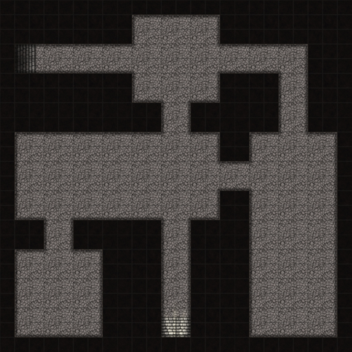
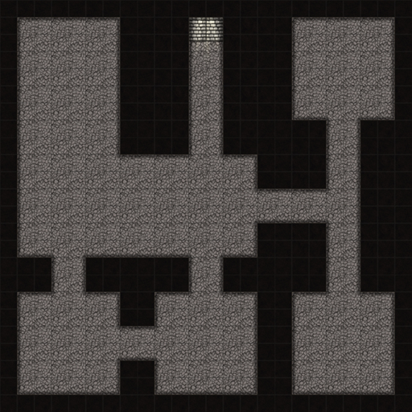
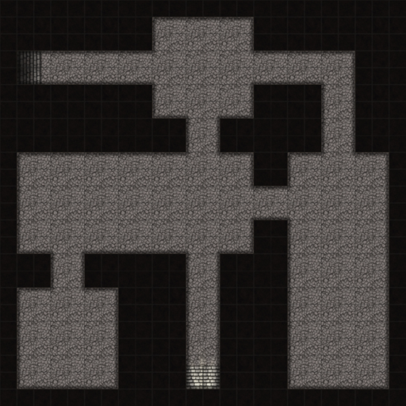
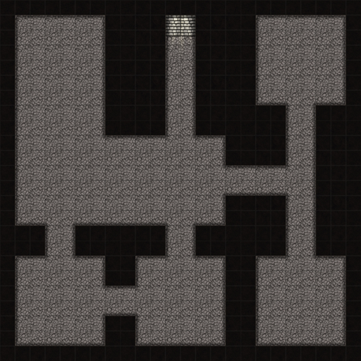

Hello and Welcome! I'm Greg.
Below are some of the projects I've worked on.
Random Dungeon Generator Web App : AnaraScape
A fan of table top games I often found myself using online tools to create maps for my players. While rewarding, it can also be time consuming to prepare for games and create these maps by hand. While I found the available online tools to be useful I often found their themes and products to be lacking in detail. Thats where the idea for AnaraScape comes in, its goal was to randomly generate maps for table top roleplayers so that they can save on preperation time, but not loose out on quality.
I have quite a bit planed for this project and it is ongoing, but checkout these images from the Blazor beta I've put together.
 



Achieving this functionally had lots of challenges such as:
- How to create designs in a random manner?
- How to validate random designs?
- How to merge the images together?
At a high level these issues were overcome with:
- Logic to select random areas and place safeguards based on random selections.
- Modified A* Search algorithm with a Queue Frontier to check every section can be reached from the entrance.
- Via the browser Canvas API unless image is to large which calls back to the Blazor server to request merged image byte array.
Checkout the code here: Repo
Endless Runner Python Game
For my capstone in CS my group decided they wished to make a game to show our programming skills, and to have a little be of fun as well. I pitched my idea for an endless runner type game in space inspired by the mini games that come in browsers. My group liked my idea and I worked as the project manager for the rest of the course of the games development.
Other than a few missing animations the game is complete and even has an exe for Windows 64bit and Linux (built on Ubuntu 24.04) available. I would like to thank my team members for their dedication on the project.
Some major hurdles were:
- How implment missile tracking?
- How to get enemies to navigate around objects?
In the implementation this was solved with:
- Calculating the shortest angle towards the locked target and incrementally turning the projectile.
- A simple pathing algorithm to check for asteroids within 25 pixels of the enemy ship.
Checkout the code here: Repo
Qt UI Calculator App
Generally considering math as one of my weak points I thought a good project to get some skill in C++ would be to make a calculator that can take math expressions and return the result to the user. This project also showed how easy CSS usage in the Qt framework was.
Currently this project is considered complete, but it certainly could have more features added, such as support for very large numbers.
Some major hurdles were:
- How to parse the input expression?
- How to handle buttons controls so a valid expression is input?
In the implementation this was solved with:
- The Shunt Yard algorithm to tokenize the input for reverse polish notation.
- A switch and object attributes to keep track of the state of the expression input.
Checkout the code here: Repo
Qt UI Auto Service Mangament App
Rather than C++, this application was made in Python with the PyQt UI framework. Rather than targeting learning the framework this project was focused on refreshing some SQL skills prior to a class at UMGC. In the end it boosted skills for both and Python itself.
This project is also seen as complete but rather than a SQLite database an alternative for multiple clients accessing the data would probabaly need to be adapted.

Issues encountered:
- How to resolve many to many relationships?
- How to validate input from the large forms in a concise way?
Solutions were:
- Implementation of a joining table (bridging table).
- Creation of a dispatch dictionary to look up and call the associated funtions.
Checkout the code here: Repo